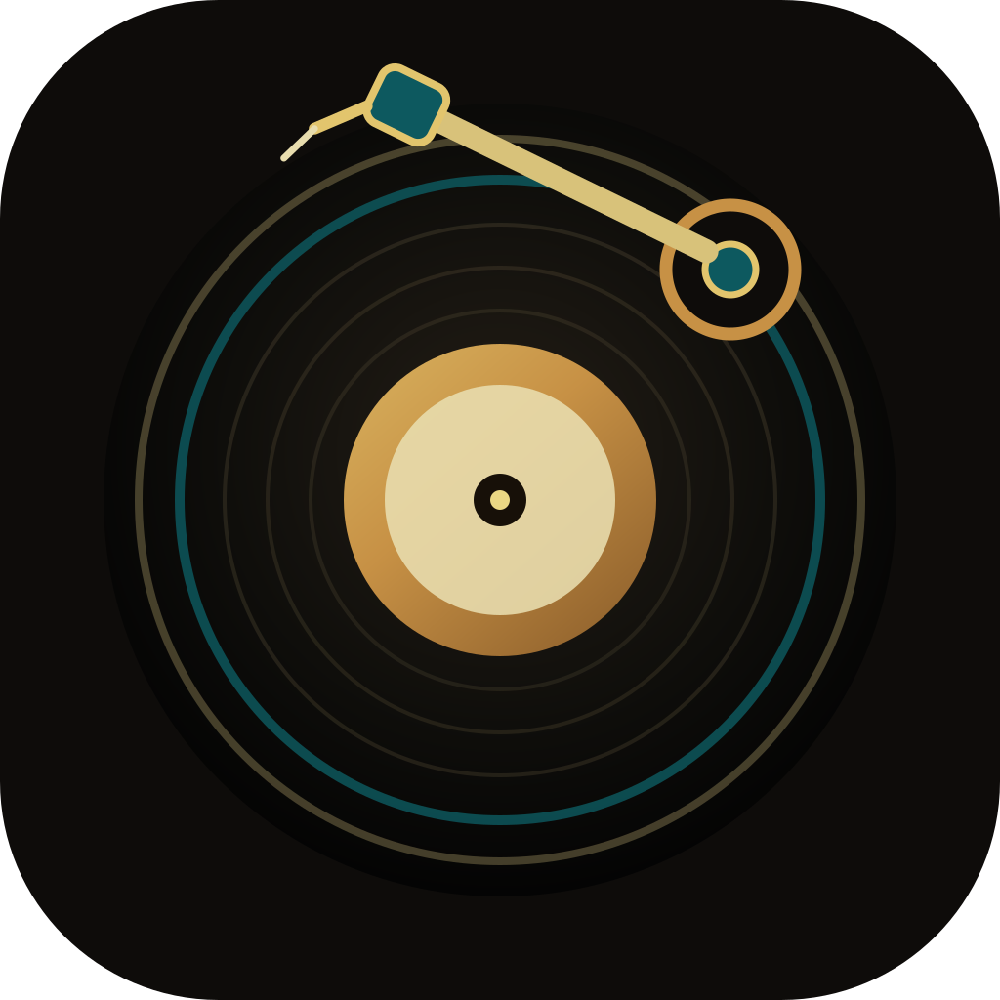
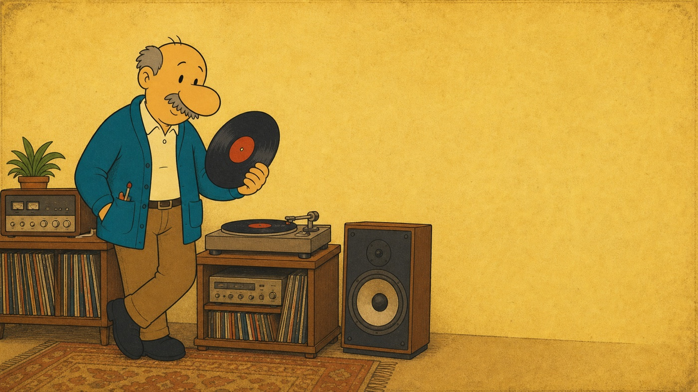
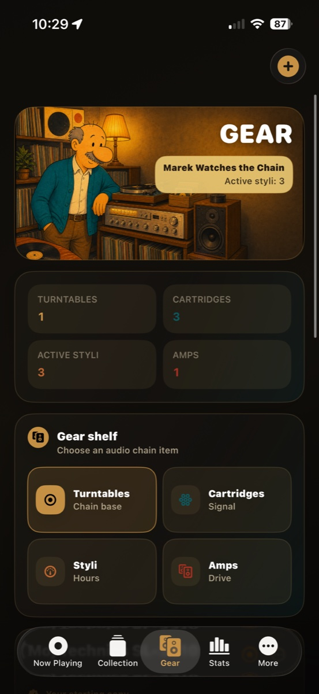
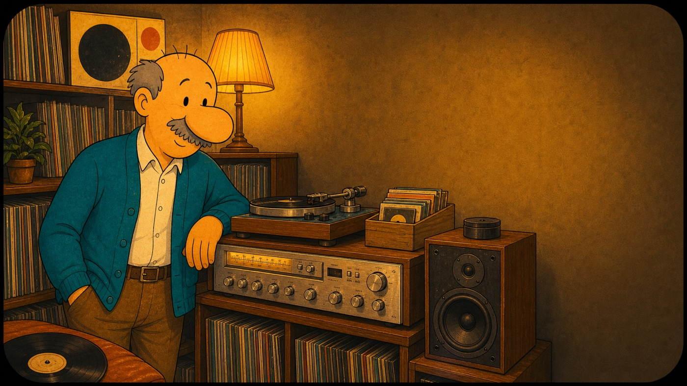
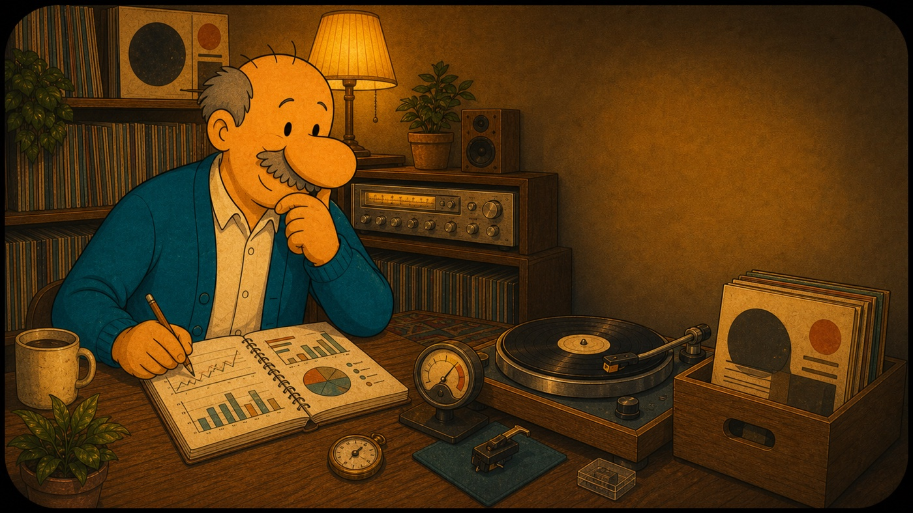
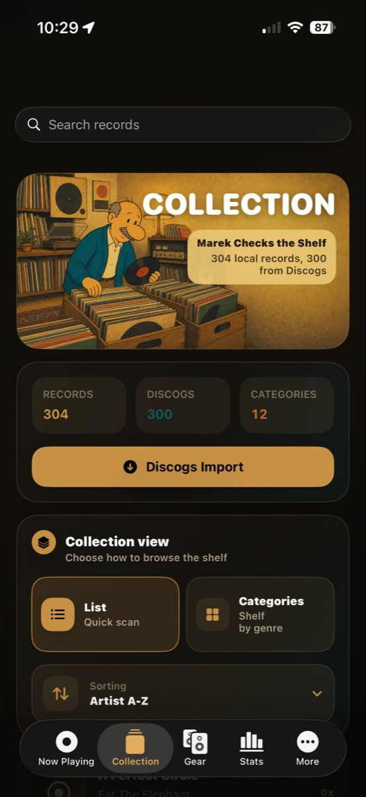
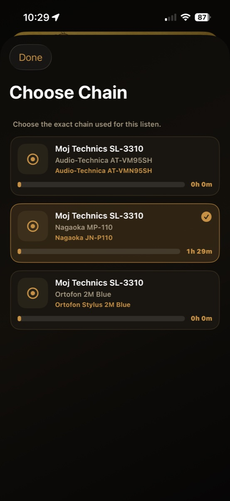
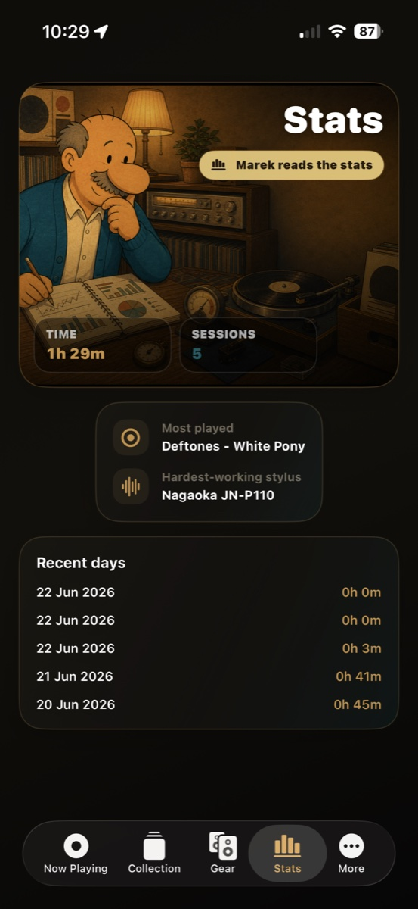
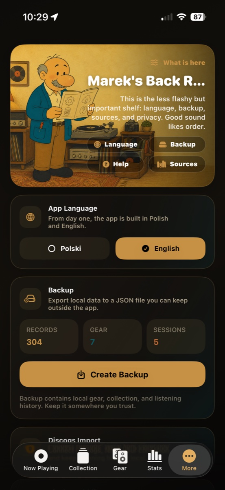

01
Now Playing
Choose the record, start the timer and keep the session tied to the right stylus.

Igla i RowekVersion 1.0 for iPhone
An analog listening journal for people who want to know not only what record is playing, but also which system, which stylus and how many hours it has already tracked.

Choose the record, start the timer and keep the session tied to the right stylus.
A local record shelf that knows what is ready to play and what came back often.

Turntables, cartridges and styli stay separated so stylus hours remain honest.
Listening time, favorite records and worn-in styli are visible without spreadsheet work.
What it does
Igla i Rowek is local-first: no account, no pressure, no social noise. It is a tool for the daily ritual of playing records and caring for an analog setup.
Pick a record, the active stylus and your listening chain. The timer handles the session, then saves it to history.

Turntables, cartridges and individual styli are tracked separately, because a stylus wears faster than the rest of the system.

Stats show listening time, session count, most-played records and the styli getting the most hours.

Version 1.0
This is not tracking for tracking's sake. The app helps remember what played, how long it ran, which stylus collected the hours and how the whole setup changes over time.
The collection screen is only one part of it: each listen becomes a small piece of history, connected to the album, the turntable chain and the real wear on the needle.
Screens
From session start to collection, gear and stats. Scroll horizontally through the screens.
Record, stylus and session timer.

A short way into the listening flow.
Listening history and stylus time.
A local record library.
Listening chains, cartridges and styli.
Insight from actual listening.

Backup, language and app support.

The local analog guardian.
Privacy and support
This site is also the official home for privacy and support information. The original URLs stay in place for App Store Connect.
Your collection, listening sessions and gear history are designed to stay on your device.
Read privacy policyFor feedback, support requests or App Store review questions, use the support page.
Open support